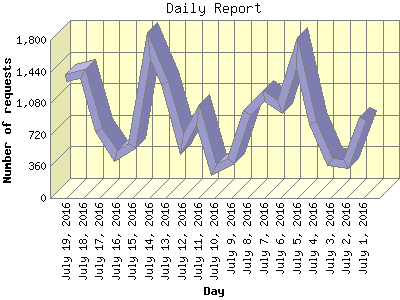

The Daily Report identifies the activity for each day within the reporting period. Remember that one page hit can result in several server requests as the images for each page are loaded.

| Day | Number of requests | Number of page requests | |
|---|---|---|---|
| 1. | July 1, 2016 | 898 | 59 |
| 2. | July 2, 2016 | 389 | 34 |
| 3. | July 3, 2016 | 412 | 37 |
| 4. | July 4, 2016 | 860 | 46 |
| 5. | July 5, 2016 | 1,648 | 74 |
| 6. | July 6, 2016 | 1,038 | 47 |
| 7. | July 7, 2016 | 1,157 | 71 |
| 8. | July 8, 2016 | 967 | 46 |
| 9. | July 9, 2016 | 425 | 31 |
| 10. | July 10, 2016 | 323 | 49 |
| 11. | July 11, 2016 | 951 | 57 |
| 12. | July 12, 2016 | 619 | 37 |
| 13. | July 13, 2016 | 1,309 | 85 |
| 14. | July 14, 2016 | 1,726 | 73 |
| 15. | July 15, 2016 | 596 | 81 |
| 16. | July 16, 2016 | 479 | 43 |
| 17. | July 17, 2016 | 769 | 49 |
| 18. | July 18, 2016 | 1,411 | 62 |
| 19. | July 19, 2016 | 1,369 | 80 |
Most active day July 13, 2016 : 85 pages sent. 1,726 requests handled.
Daily average: 55 pages sent. 912 requests handled.
This report was generated on July 20, 2016 01:44.
Report time frame July 1, 2016 01:24 to July 19, 2016 23:54.
| Web statistics report produced by: analog 6.0 / Report Magic 2.21 |